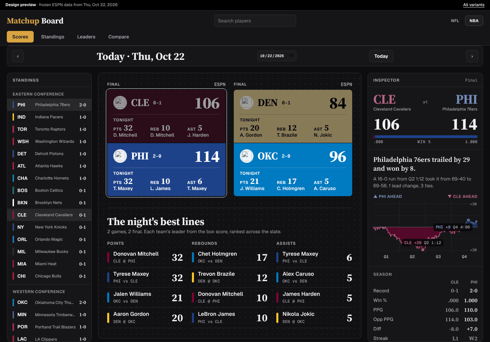

V1 · Editorial type scale
One 1.25 type scale from 12 to 76px with serif numerals, a written recap of the game built from the play-by-play, and a full stat line on every leader.
Source Serif 4 for headlines and every big number: an optical-size serif with tabular lining figures, so scores and stats read like a sports page and still line up in columns.